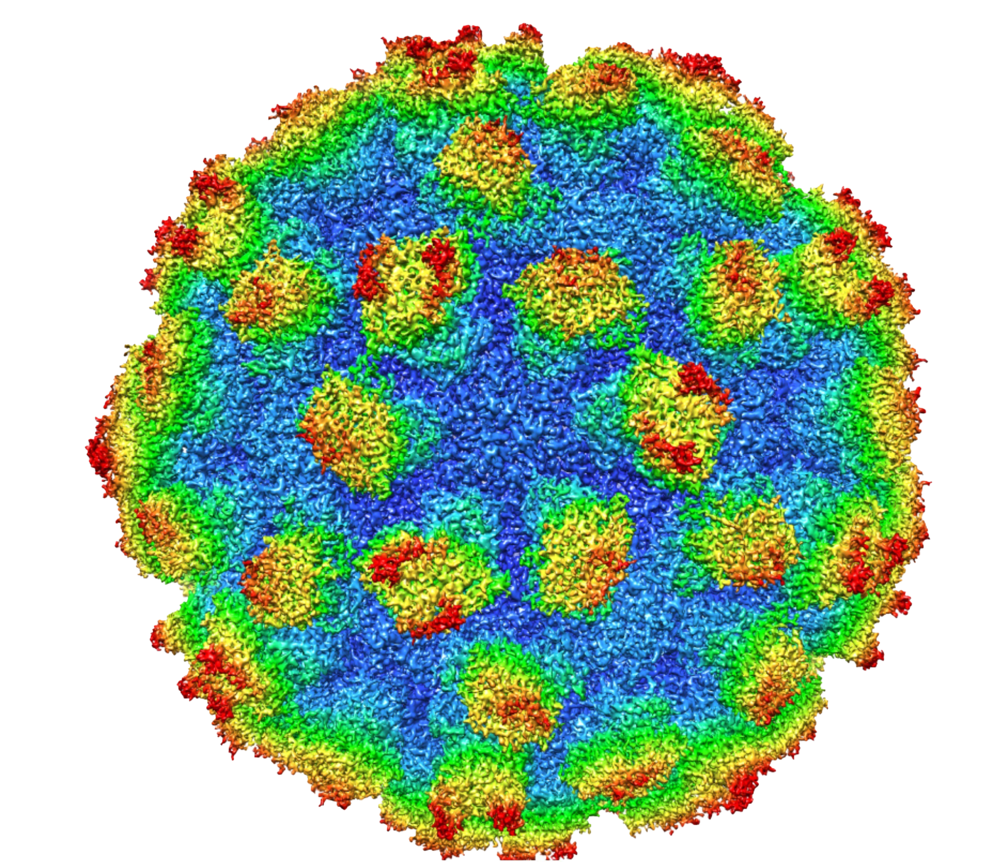
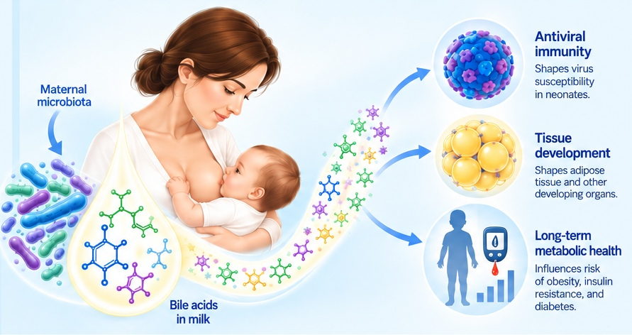
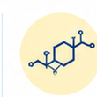
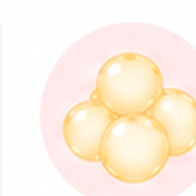

Viruses & Neonatal Immunity
How viruses, the microbiome, and maternal signals shape antiviral defenses and disease susceptibility in early life.
Learn more →We study how maternal factors, microbial metabolites, and viruses interact during early life to shape neonatal disease and long-term physiology.
Explore Our Research →

How viruses, the microbiome, and maternal signals shape antiviral defenses and disease susceptibility in early life.
Learn more →
How bile acids carried in milk function as signaling molecules that regulate neonatal physiology.
Learn more →
How transient exposures during early life reshape tissue development and lifelong metabolic health.
Learn more →Maternal diet–milk bile acids program offspring adiposity.
Maternal microbial metabolites and neonatal antiviral immunity.
Excited to have you join the lab.